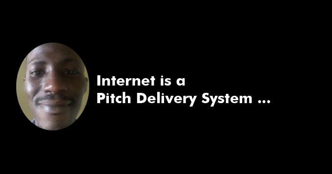

Internet is a Pitch Delivery System

If you are a marketer, you already know that a marketer holds only three assets a product, a pitch, and a pitch delivery system. These three core things are the key components of every business like marketplaces … or whatever business it is about. It happens that since the world is a world there was always been a pitch delivery system. The one we born with is our mouth. Yes, we use it still now for pitching ideas, products, and services. It is the most powerful pitch delivery system if you get people to talk about your products, services, or ideas for free. That’s what we call word of mouth and if your thing is exciting it can go viral with only this delivery system. It is the most effective pitch delivery system. So radio, tv, and print came to life and had allowed marketers to sell you a lot of things by using advertising. Do you think that internet is different than this past medium?
My answer is no. The Internet is only a pitch delivery system. That’s all it is a pitch delivery system. All other things like payment processing forms filling …list of all these tech driven plugins . Are performed by people on the internet only because you delivered them a good pitch.
See the internet like a pitch delivery system because it is nothing other than that